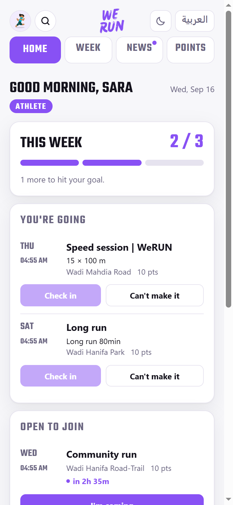
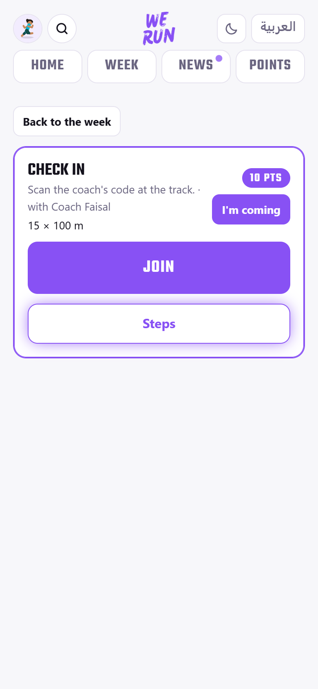
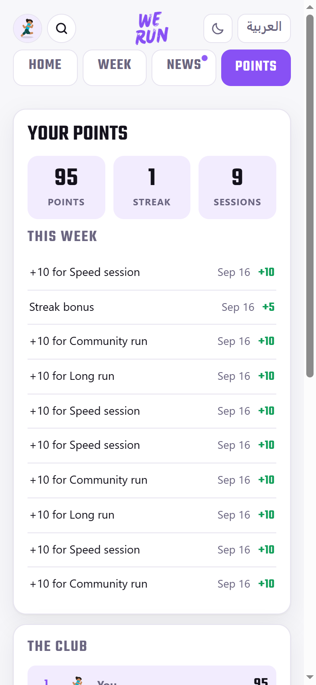
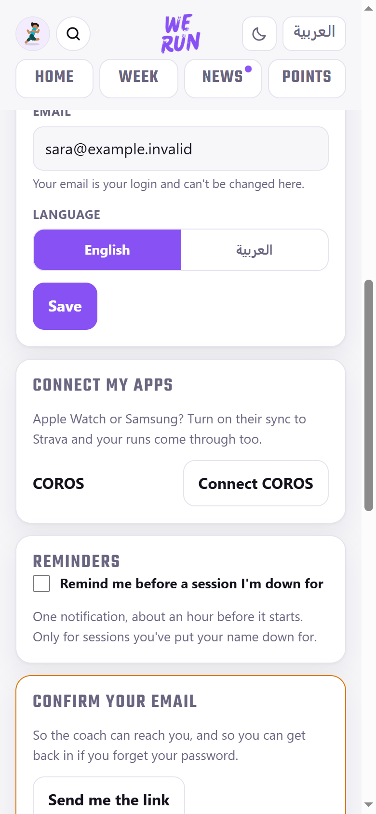
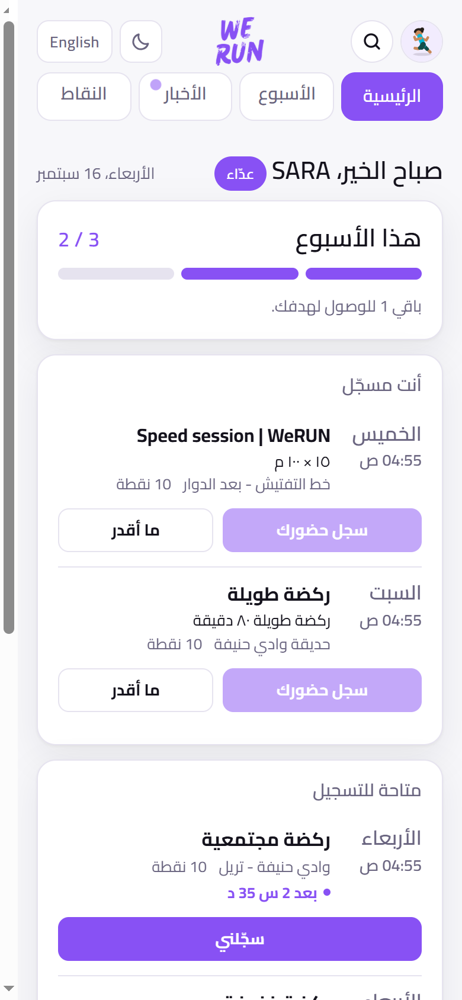
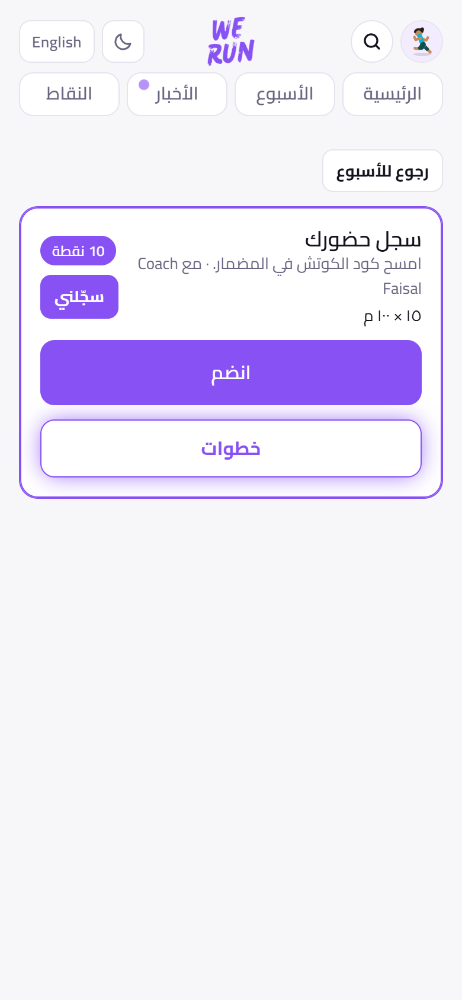
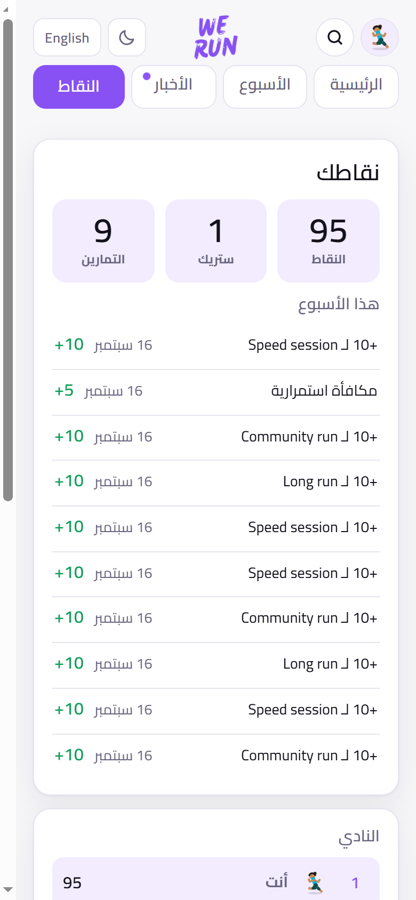
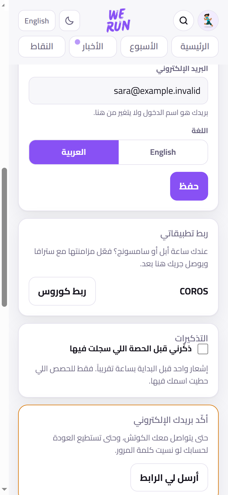

1 · Join, or sign in
- Open weruncoaching.pages.dev/app.html on your phone. Add it to your home screen so it opens like an app.
- Tap Join the club: your name as the coach knows you, your email, and a password of at least 8 characters. Gender and age are optional.
- Already a member? Log in. Forgotten your password? Ask the coach for a reset link.
- العربية at the top switches the app to Arabic; the moon is dark mode.
2 · What is in the app
- Home: your check-ins this week against your goal, You're going, and Open to join.
- Week: the club's week, Sunday to Saturday: time, session, place (tap it for the map) and points. Tap a row to open it.
- News: what the coach posts. Points: your total, streak, history and the club board.
- Your picture in the top corner opens Me: name, avatar, weekly goal, Reminders, Connect my apps, language, password, log out.
3 · Before the session
- Open the session and tap I'm coming, so the coach knows who to expect. Plans changed? Can't make it.
- Turn on Reminders in Me: one notification about an hour before a session you are down for.
- If the session has a workout, Steps shows it: warm-up, intervals, cool-down.
4 · Checking in at the track
- When you arrive, open the session, tap the big Join button and point the camera at the coach's code. Your phone's camera app works too.
- The points land straight away. The code changes every 30 seconds, so a photo of it will not work later.
Check-in opens an hour before the session and closes two hours after it starts. Missed it? Ask the coach.

Home

A session · I'm coming · Join

Your points

Me · goal and reminders
١ · انضم أو سجّل الدخول
- افتح weruncoaching.pages.dev/app.html من جوالك، وأضِفه إلى الشاشة الرئيسية ليفتح مثل التطبيق.
- اضغط انضم للنادي: اسمك كما يعرفك المدرب، وبريدك، وكلمة مرور من ٨ أحرف على الأقل. الجنس والعمر اختياريان.
- عضو من قبل؟ تسجيل الدخول. نسيت كلمة المرور؟ اطلب من المدرب رابط تعيين جديد.
- زر English في الأعلى يبدّل اللغة، والقمر للوضع الليلي.
٢ · ما الذي في التطبيق
- الرئيسية: حضورك هذا الأسبوع مقابل هدفك، وأنت مسجّل، ومتاحة للتسجيل.
- الأسبوع: أسبوع النادي من الأحد إلى السبت: الوقت والتمرين والمكان (اضغطه للخريطة) والنقاط. اضغط السطر لفتحه.
- الأخبار: ما ينشره المدرب. النقاط: مجموعك والستريك والسجل ولوحة النادي.
- صورتك في الزاوية تفتح حسابي: الاسم والصورة وهدف الأسبوع والتذكيرات وربط تطبيقاتي واللغة وكلمة المرور وتسجيل الخروج.
٣ · قبل الحصة
- افتح الحصة واضغط سجّلني ليعرف المدرب من سيحضر. تغيّرت خطتك؟ ما أقدر.
- شغّل التذكيرات من حسابي: إشعار واحد قبل الحصة بساعة تقريبًا.
- إذا كان للحصة تمرين مكتوب، زر خطوات يعرضه: الإحماء والجري والاستشفاء والتهدئة.
٤ · تسجيل الحضور في المضمار
- عند وصولك افتح الحصة، واضغط زر انضم الكبير، ووجّه الكاميرا إلى رمز المدرب. كاميرا الجوال العادية تعمل أيضًا.
- تُضاف النقاط فورًا. الرمز يتغيّر كل ٣٠ ثانية، فصورة له لن تنفع لاحقًا.
التسجيل يفتح قبل الحصة بساعة ويُغلق بعد بدايتها بساعتين. فاتك؟ راجع المدرب.

الرئيسية

الحصة · سجّلني · انضم

نقاطك

حسابي · الهدف والتذكيرات